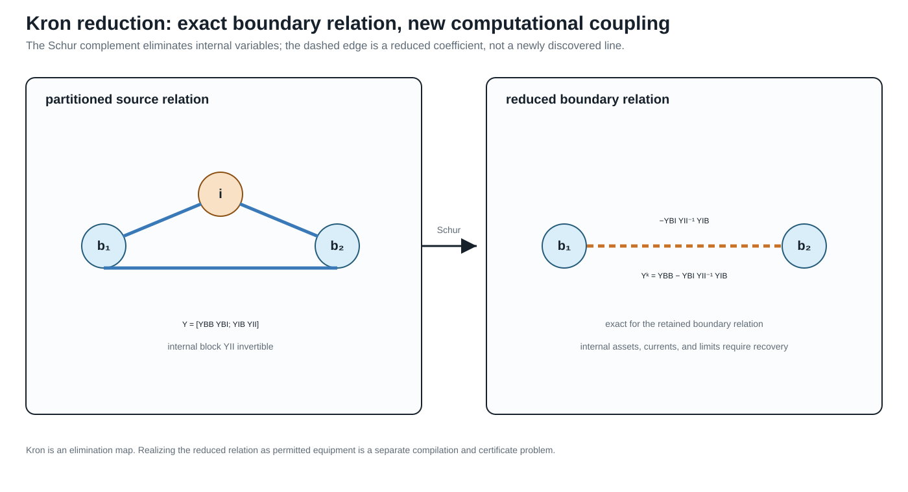

Kron, Ward, and optimized network equivalents
Page status: scoped reduction definitions, audited literature synthesis, and a package-independent Kron/Ward/scenario comparison; independent mathematical review and source-faithful Opti-KRON implementation remain open.
Scope: linear and affine boundary reductions, operating-point Ward-style targets, and small scenario-approximation witnesses. Evidence: Schur-complement derivations, recovery checks, and package-independent numerical fixtures. Numerical optimality: scenario probes and local solves do not establish global nonlinear AC optimality. Unresolved boundary: universal physical realizability, uncertainty-robust preservation, and external review.
Three different questions
Kron reduction, Ward equivalents, and Opti-KRON are related, but they do not make the same modelling choice:
\[\boxed{ \begin{aligned} \text{Kron: }&\text{which linear boundary relation results from elimination?}\\ \text{Ward: }&\text{how is the eliminated external system represented at the boundary?}\\ \text{Opti-KRON: }&\text{which nodes or clusters should be retained under an error objective?} \end{aligned}}\]
All three require a declared source model, boundary, injection model, and observation contract. None is inherently an asset-preserving transformation.
Linear Kron reduction
Partition a linear nodal relation into retained boundary variables $B$ and eliminated internal variables $I$:
\[\begin{bmatrix} \mathbf i_B\\ \mathbf i_I \end{bmatrix} = \begin{bmatrix} \mathbf Y_{BB}&\mathbf Y_{BI}\\ \mathbf Y_{IB}&\mathbf Y_{II} \end{bmatrix} \begin{bmatrix} \mathbf v_B\\ \mathbf v_I \end{bmatrix}.\]
Proposition. If $\mathbf Y_{II}$ is invertible and $\mathbf i_I$ is fixed, then eliminating $\mathbf v_I$ gives the exact affine boundary relation
\[\mathbf i_B =\mathbf Y_{\mathrm K}\mathbf v_B +\mathbf K_I\mathbf i_I,\]
where
\[\mathbf Y_{\mathrm K} =\mathbf Y_{BB} -\mathbf Y_{BI}\mathbf Y_{II}^{-1}\mathbf Y_{IB}, \qquad \mathbf K_I =\mathbf Y_{BI}\mathbf Y_{II}^{-1}.\]
The eliminated voltages are recovered by
\[\mathbf v_I =\mathbf Y_{II}^{-1} (\mathbf i_I-\mathbf Y_{IB}\mathbf v_B).\]
Proof. Solve the internal block equation for $\mathbf v_I$ and substitute it into the boundary block equation.
For zero internal injection this becomes
\[\mathbf i_B=\mathbf Y_{\mathrm K}\mathbf v_B.\]
This is exact equality of a selected linear terminal relation. Schur elimination can create dense coupling among neighbours of eliminated nodes, and the resulting entries need not correspond to physical lines. Dörfler and Bullo analyze the graph and loopy-Laplacian properties of this operation [17]. Closure inside a more restrictive dynamic or device class requires additional physical assumptions [47].

The dashed boundary coupling is a reduced coefficient. It is exact for the retained linear boundary relation, but it is not by itself a physical asset with recoverable currents, limits, or outage identity.
Kron reduction does not by itself preserve:
- eliminated asset identity or topology;
- internal branch currents and limits unless recovery is retained;
- switching, outage, maintenance, or investment decisions;
- protection and failure dependencies;
- sparsity;
- nonlinear constant-power behaviour over arbitrary operating points.
The Schur complement first produces a reduced multiport relation. Realizing that relation as a permitted collection of bus–branch devices is a separate synthesis or compilation problem.
Eliminating a neutral voltage does not eliminate the neutral conductor's current rating. If the source relation gives the neutral branch current as $I_n=A_{nB}v_B+A_{nI}v_I$ and Kron recovery gives $v_I=Y_{II}^{-1}(i_I-Y_{IB}v_B)$, then the reduced decision model must retain the recovered constraint $|A_{nB}v_B+A_{nI}Y_{II}^{-1}(i_I-Y_{IB}v_B)|\leq\bar I_n$ (or its declared multiconductor norm). The boundary Schur complement alone is not enough for an OPF, hosting-capacity, protection, or contingency problem that observes that neutral limit. The constraint may be omitted only when the neutral rating is genuinely outside the observation set or is proved redundant by a separate certificate.
Typed multiconductor Kron reduction
In the multiconductor case, the symbols $B$ and $I$ denote direct sums of typed terminal-coordinate spaces, not merely lists of scalar buses. Let
\[\mathcal V_B=\bigoplus_{k\in B}\mathbb C^{n_k}, \qquad \mathcal V_I=\bigoplus_{k\in I}\mathbb C^{n_k}.\]
Each port voltage is first aligned with its junction by its terminal map. If $\mathbf N_q$ maps the ordered junction voltage into the ordered coordinates of port $q$, then
\[\mathbf v_q=\mathbf N_q\mathbf U_{j(q)}, \qquad \mathbf I_{j(q)}\mathrel{+}= \mathbf N_q^{\mathsf H}\mathbf i_q.\]
The conjugate transpose in the current map is the power-dual action: it makes $\mathbf v_q^{\mathsf H}\mathbf i_q$ agree with the corresponding junction power pairing. The assembled nodal blocks in the preceding section are formed only after these terminal maps have been applied. Consequently every product $\mathbf Y_{BI}\mathbf Y_{II}^{-1}\mathbf Y_{IB}$ is a typed map $\mathcal V_B\rightarrow\mathcal V_B$.
Proposition (typed coordinate-covariant Kron reduction). Suppose the assembled linear multiconductor relation has $\mathbf Y_{II}:\mathcal V_I\rightarrow\mathcal V_I$ invertible and the internal injection $\mathbf i_I$ is fixed data, independent of $\mathbf v_I$. Let $\mathbf T_B$ and $\mathbf T_I$ be invertible coordinate actions such that $\mathbf T=\operatorname{diag}(\mathbf T_B,\mathbf T_I)$ respects the retained/internal partition, with
\[\mathbf v_B=\mathbf T_B\widetilde{\mathbf v}_B, \qquad \mathbf v_I=\mathbf T_I\widetilde{\mathbf v}_I, \qquad \widetilde{\mathbf i}_B=\mathbf T_B^{\mathsf H}\mathbf i_B, \qquad \widetilde{\mathbf i}_I=\mathbf T_I^{\mathsf H}\mathbf i_I.\]
Then Kron reduction before or after the coordinate change gives the same boundary relation. Specifically,
\[\widetilde{\mathbf Y}_{\mathrm K} = \mathbf T_B^{\mathsf H}\mathbf Y_{\mathrm K}\mathbf T_B,\]
and the affine internal-injection term transforms as
\[\widetilde{\mathbf K}_I\widetilde{\mathbf i}_I = \mathbf T_B^{\mathsf H}\mathbf K_I\mathbf i_I.\]
The recovered internal voltage is coordinate consistent:
\[\widetilde{\mathbf v}_I = \mathbf T_I^{-1}\mathbf Y_{II}^{-1} (\mathbf i_I-\mathbf Y_{IB}\mathbf v_B).\]
Proof. The transformed blocks are
\[\widetilde{\mathbf Y}_{XY} =\mathbf T_X^{\mathsf H}\mathbf Y_{XY}\mathbf T_Y, \qquad X,Y\in\{B,I\}.\]
Using
\[(\mathbf T_I^{\mathsf H}\mathbf Y_{II}\mathbf T_I)^{-1} =\mathbf T_I^{-1}\mathbf Y_{II}^{-1}\mathbf T_I^{-\mathsf H}\]
in the transformed Schur complement cancels the internal coordinate maps and leaves $\mathbf T_B^{\mathsf H}\mathbf Y_{\mathrm K}\mathbf T_B$. The same substitution proves the affine and recovery identities.
The proposition covers phase permutations and other invertible port-coordinate actions. Per-port block diagonality within $\mathbf T_B$ or $\mathbf T_I$ is an additional modelling restriction that keeps the action local to each port; it is not needed by the covariance proof. A dense action within the retained partition and a dense action within the internal partition satisfy the same identities. What is excluded is a coordinate map that mixes retained and internal variables, because then it changes the eliminated/observed partition.
The fixed-injection qualification is load-bearing. If an internal device has a voltage-dependent law, for example $\mathbf i_I(\mathbf v_I)=\overline{\mathbf S_I\oslash\mathbf v_I}$, then $\mathbf K_I\mathbf i_I(\mathbf v_I)$ is not a fixed affine term and the proposition does not provide a voltage-independent boundary operator. Such a device may still be eliminated with a nonlinear or state-dependent implicit relation, but that is a different transformation contract.
A sequence-coordinate statement needs its transform convention declared: with the usual non-unitary Fortescue matrix $\mathbf F$, applying the same voltage and current coordinates gives the similarity action $\mathbf F^{-1}\mathbf Y\mathbf F$; the power-dual convention above gives the congruence action $\mathbf F^{\mathsf H}\mathbf Y\mathbf F$. These coincide only under additional normalization assumptions. Neither convention justifies dropping a conductor, identifying a neutral with earth, or aggregating phases: those maps are not invertible coordinate changes and require separate preservation claims.
Corollary (reciprocity is convention-relative). Kron reduction preserves complex symmetry of a reciprocal nodal matrix in physical coordinates. A real coordinate congruence $T^{\mathsf T}\mathbf YT$ also preserves complex symmetry. The power-dual action $T^{\mathsf H}\mathbf YT$ preserves it when $T$ is real (or under other explicit compatibility conditions), but not for an arbitrary complex $T$. Hermitian structure and complex symmetry are distinct properties; the certificate must record which one is required and which coordinate action is being used. Thus “Kron preserves reciprocity” and “this complex coordinate representation remains symmetric” are separate claims.
Executable typed fixture
The first package-independent witness is recorded in experiments/generated/typed-kron-witness.json and certified by experiments/generated/typed-kron-certificate.json. It has three retained two-conductor ports and one eliminated two-conductor port. The fixture checks the reduced covariance residual, affine-injection covariance, internal-voltage recovery, and source-current limit evaluation after applying complex block-diagonal power-dual coordinate actions. It also checks dense actions within the retained and internal partitions, confirming that per-port block-diagonality is only a locality restriction. The reported residuals are below $2\times 10^{-15}$ for the boundary identity and below $7\times10^{-17}$ for internal-state recovery; the fixture records the condition numbers of the internal block and coordinate actions.
The witness evaluates a deliberately different constant-power internal injection at the same recovered $\mathbf v_I$. Its current differs materially from the fixed datum, and the affine boundary term changes accordingly. This is a scope diagnostic: it does not disprove nonlinear elimination, but prevents the fixed-injection affine certificate from being reused for a voltage- dependent device.
The same artifact records two target-library outcomes. The general reduced multiport is reciprocal but its off-diagonal conductor blocks are not all individually symmetric, so the direct line–shunt construction is rejected for that restricted library. A separate admissible full-matrix, block-symmetric line–shunt witness is stamped exactly, with residual below $10^{-15}$, while a diagonal-only line library is rejected. This is deliberately a positive and negative realizability test, not a claim that every Kron-reduced multiport is a physical bus–branch network.
The same witness now applies a deliberately narrower transformer-library test. In this selected library, each winding block is required to be diagonal in the declared conductor coordinates and the complete relation must remain reciprocal. The coupled target above is rejected because at least one winding block is dense; a companion target obtained by removing those cross-conductor entries is accepted. This is a closure test for a restricted transformer vocabulary, not an identification of turns ratios, leakage parameters, or grounding data.
Direct running-network line witness
The witness family is split by the question it answers rather than presented as one undifferentiated Kron example:
| claims | fixture/question | what varies | what changes | not claimed |
|---|---|---|---|---|
TR-KRON-NEUTRAL-001 | running four-conductor line midpoint | retained midpoint and neutral limit | recovered neutral current changes feasibility | physical rating generality; nonlinear loads |
TR-KRON-NEUTRAL-002 | explicit five-conductor earth coordinate | neutral–earth bond and earth terminal | neutral and earth KCL currents remain separate | standards-aligned grounding/protection |
TR-KRON-NEUTRAL-003 | two explicit grounding points | two bond locations | both bond-current observations survive | one aggregate neutral constraint |
TR-KRON-NEUTRAL-004 | grounding-impedance sensitivity | two declared impedance pairs | neutral current and feasibility classification | uncertainty quantification |
TR-KRON-NEUTRAL-005 | one state-dependent bond | endpoint state | frozen nominal map leaves residual; recomputation restores it | global nonlinear theorem |
TR-KRON-NEUTRAL-006 | two state-dependent bonds | endpoint state and two maps | segment currents and residual change | global continuation/protection |
TR-KRON-NEUTRAL-007 | finite continuation | five endpoint states | neutral-limit margin changes | adaptive/global continuation |
TR-KRON-NEUTRAL-008 | local derivative bound | perturbation scale | recomputed Jacobian reduces local error | global error bound |
TR-KRON-FIVE-001, -002 | five-bus scalar pendant/non-pendant cases | eliminated bus and retained boundary | exact recovery; non-pendant elimination creates fill | general multiconductor closure |
The table is the scope summary; the paragraphs below retain the construction details needed to reproduce each check.
Running-network line and explicit neutral recovery
The canonical running fixture now has a direct typed-Kron check in experiments/generated/running-network-typed-kron-witness.json. Line $l_1$ is split into two equal four-conductor series sections, with the midpoint retained as the internal block. Eliminating that midpoint reproduces the original $i_1$–$i_2$ line primitive to below $10^{-11}$ and recovers the midpoint voltage $(U_{i_1}+U_{i_2})/2$ to the same tolerance. Terminal order, bus identity, and the four-conductor boundary are retained explicitly.
The same artifact carries a deliberately tight neutral-limit witness. The four-conductor midpoint is eliminated, but the recovered neutral current is $(-0.0430252+0.0197760\,\mathrm i)$ p.u. on both half-sections. A declared limit of $0.0426173$ p.u. is therefore violated by this boundary point. The test records that the current recovery is exact and that dropping the neutral constraint would accept a point the source model rejects. This is claim TR-KRON-NEUTRAL-001.
The companion experiments/generated/neutral-kron-independent-reproduction.json reconstructs the four-conductor impedance and midpoint recovery with a separate standard-library complex solver. It matches both half-section neutral currents, reproduces the exact recovery identity, and retains the deliberately violated limit.
The same witness now includes a midpoint neutral-to-reference shunt probe. The shunt changes the recovered neutral current from the series-only value, adds a reference-current term to the midpoint KCL, and retains a separate neutral limit evaluation. Its KCL residual is below $10^{-11}$, and the independent reproduction checks the shunted currents as well as the series case.
Explicit earth coordinate and grounding-parameter sensitivity
The next probe makes the earth-return coordinate explicit rather than treating it as an unnamed reference. In TR-KRON-NEUTRAL-002, a synthetic five-conductor $(a,b,c,n,e)$ series midpoint retains an earth terminal $e$ and stamps a midpoint neutral–earth bond. Kron recovery reports separate neutral and earth currents, verifies their KCL equations with opposite bond-current signs, and evaluates the neutral current limit on the recovered half-section. The companion experiments/generated/explicit-earth-kron-independent-reproduction.json uses a separate standard-library complex solver. Collapsing $e$ into $n$ would erase the observed bond-current relation.
The same artifact adds a two-grounding-point extension, TR-KRON-NEUTRAL-003. A three-segment five-conductor chain has explicit internal points $m_1$ and $m_2$, each with its own neutral–earth bond. The recovered segment currents verify separate neutral and earth KCL at both points, and both bond currents remain observable after the two internal blocks are eliminated. This is the smallest useful warning against replacing a distributed grounding structure by one aggregate neutral constraint.
Finally, TR-KRON-NEUTRAL-004 holds the topology and terminal order fixed while sweeping four declared pairs of grounding impedances. The recovered neutral current changes across the cases, and a fixed $0.028$ p.u. neutral limit changes feasibility classification: the structural Kron and KCL checks remain valid, but the decision observation does not. The generated sweep and its standard-library reproduction therefore separate structure preservation from parameter-dependent feasible-set preservation. This is a finite sensitivity probe.
State-dependent grounding bonds
The next boundary is local state dependence. In TR-KRON-NEUTRAL-005, the neutral–earth bond current is defined by an illustrative voltage-dependent law $i_{ne}=y_0(1+\alpha_{\mathrm g}|V_n-V_e|^2)(V_n-V_e)$. Here $\alpha_{\mathrm g}$ is a grounding-law coefficient, distinct from the served-load decision $\alpha$ used in the parallel-line cases. After an endpoint state shift, the nominal bond map leaves a nonzero nonlinear residual and a different recovered neutral current; a local Newton solve with the bond recomputed at the shifted state restores the relation and re-evaluates the neutral limit. The independent reproduction uses a separate finite-difference Newton implementation.
The distributed version is also exercised locally in TR-KRON-NEUTRAL-006. The three-segment chain has two voltage-dependent neutral–earth bonds. After the same endpoint shift, freezing both nominal bond maps leaves a nonzero chain residual and changes the recovered neutral currents on the three segments; a two-point Newton solve with both maps recomputed restores the local relation. The companion standard-library reproduction checks the midpoint values and residuals.
TR-KRON-NEUTRAL-007 records a finite endpoint-state continuation of that two-point chain at $\lambda\in\{0,0.25,0.5,0.75,1\}$. Each state is solved with both nonlinear bond maps recomputed; the five nonlinear residuals remain small and the fixed $0.05$ p.u. neutral limit changes classification along the path. Reusing the nominal map fails away from $\lambda=0$. The independent reproduction checks every continuation row. This is a finite local path.
TR-KRON-NEUTRAL-008 adds a local derivative certificate for the same illustrative voltage-dependent neutral–earth bond law. At a declared base state, the analytic real Jacobian is compared with the frozen nominal coefficient after a state shift. The frozen map leaves a nonzero residual, whereas the recomputed Jacobian gives the smaller local linearisation error; the error decreases as the declared step is reduced. The generated experiments/generated/nonlinear-grounding-local-bound-witness.json records the Jacobian, residuals, step scales, and interpretation. This is a local Taylor/conditioning check.
Five-bus scalar reductions
The five-bus companion experiments/generated/five-bus-typed-kron-witness.json covers the scalar pendant case directly. Eliminating bus $m$ through its sole incident line $u$ gives the same retained $Y$-bus as deleting that leaf line from the graph, and the recovered boundary current matches the full nodal relation to machine precision. This is claim TR-KRON-FIVE-001.
The same witness also eliminates the non-pendant bus $\ell$ while retaining $i,j,k,m$. Boundary-current recovery remains exact, but the Schur complement creates retained support on $j-m$ and $k-m$. These are fill edges: they are couplings in the reduced relation, not automatically new physical lines. The recovered $u$-branch current is exact as well, but a deliberately tight declared $u$-limit is violated by the recorded state. This is claim TR-KRON-FIVE-002 and is the small scalar analogue of the ordering, fill-in, and retained-constraint consequences discussed later in the numerical chapter.
Realizability is a second theorem
The reduced matrix always defines a general linear factor on the retained ports. It need not define a conventional collection of lines. Realizability is therefore relative to a target device library.
A nonzero off-diagonal block in a reduced admittance is a boundary coupling, not automatically a physical line. Any line–shunt realization is a second construction whose asset meaning, limits, states, and provenance must be declared separately.
For a useful baseline, suppose all retained junctions use the same ordered $c$-conductor coordinates and the target library permits:
- one reciprocal full-matrix series primitive between any pair of retained junctions; and
- one full-matrix shunt primitive at every retained junction.
Write the reduced admittance in $c\times c$ blocks $\mathbf Y^{\mathrm K}_{pq}$.
Proposition (direct line–shunt realization). If every off-diagonal block obeys
\[\mathbf Y^{\mathrm K}_{pq} =\mathbf Y^{\mathrm K}_{qp} =(\mathbf Y^{\mathrm K}_{pq})^{\mathsf T},\]
then the reduced relation has the exact complete-graph realization
\[\mathbf Y^{\mathrm s}_{pq}=-\mathbf Y^{\mathrm K}_{pq}, \qquad \mathbf Y^{\mathrm{sh}}_p =\mathbf Y^{\mathrm K}_{pp} -\sum_{q\ne p}\mathbf Y^{\mathrm s}_{pq}.\]
Proof. A reciprocal series primitive contributes $-\mathbf Y^{\mathrm s}_{pq}$ to both off-diagonal blocks and $\mathbf Y^{\mathrm s}_{pq}$ to both corresponding diagonal blocks. Summing all pairwise stamps reproduces every off-diagonal block. The residual shunt definition then reproduces each diagonal block. Thus the proposition is an exact stamping identity in a library that permits full $c\times c$ reciprocal blocks; it is not a claim that a smaller physical line library is closed under Kron reduction. For $N$ retained junctions the construction uses $N(N-1)/2$ pairwise series blocks plus $N$ shunts.
This is an algebraic realization, not yet a physical line realization. A passive line–shunt library imposes additional conditions such as
\[\operatorname{He}(\mathbf Y^{\mathrm s}_{pq})\succeq0, \qquad \operatorname{He}(\mathbf Y^{\mathrm{sh}}_p)\succeq0,\]
along with its reciprocity, frequency, grounding, and parameterization rules. A restricted diagonal or sequence-decoupled library imposes stronger closure conditions. Ideal-transformer terminal maps can realize a broader class of off-diagonal blocks, but then transformer ratios, winding coordinates, grounding, and provenance become part of the target certificate. If none of these libraries closes, retaining $\mathbf Y_{\mathrm K}$ as one general multiport factor is still exact.
Internal current and limit recovery is yet another layer. If a source branch current has the affine form
\[\mathbf I_\ell =\mathbf A_{\ell B}\mathbf v_B +\mathbf A_{\ell I}\mathbf v_I,\]
substitution of the voltage recovery map gives an exact affine boundary map for $\mathbf I_\ell$. Keeping that map permits source limits to be checked; discarding it does not make limits on artificial reduced branches equivalent.
Ward equivalents
The affine term
\[\mathbf K_I\mathbf i_I\]
shows what a network equivalent must do when the eliminated region has nonzero injections. A Ward-type equivalent combines the reduced boundary admittance with equivalent boundary injections, shunts, or sources intended to represent the external system in a power-flow study. Ward's original construction explicitly approximates suppressed loads and generation as constant currents, retains the tie terminals, replaces the eliminated network by a boundary mesh, and places equivalent injections at those terminals [51].
For a linear fixed-current source model, the affine relation above is exact. For a constant-power AC model, however,
\[\mathbf i_I(\mathbf v_I) =\left(\mathbf S_I\oslash\mathbf v_I\right)^*,\]
where $\oslash$ denotes componentwise division. The internal injection is then voltage dependent, so replacing it by a fixed boundary source is not a global exact reduction of the nonlinear feasible relation. Its validity must instead be tied to an operating point, linearization, iteration, or scenario domain.
The term extended Ward is not just another name for that base construction. Monticelli and coauthors build an external equivalent for static security from a single estimated operating state, address boundary-bus designation, and discuss treatment of external shunts and generator-outage studies [52]. A Ward–PV construction instead retains external generator buses after load-node elimination; the reduced Ward–PV model then aggregates selected coherent generator groups [53]. These targets preserve different state and control structure.
The resulting source taxonomy is:
- classical Ward: constant-current approximation followed by external-bus elimination and boundary-mesh/injection realization;
- operating-state extended Ward: a base-state-calibrated external equivalent with extra boundary, shunt, and contingency treatment;
- Ward–PV: retention of selected generator/PV structure before any subsequent coherent aggregation;
- nonlinear or iterative Ward-type methods: later constructions that update or fit the boundary source model over operating points and must state their own domain.
These are historically related, not mathematically interchangeable. In particular, the exact affine result for fixed currents does not make a base-state-calibrated AC equivalent globally exact for constant-power or voltage-controlled devices.
Opti-KRON
Opti-KRON adds a structural selection problem around a Kron-based electrical reduction. An assignment matrix maps original nodes to retained supernodes; the selection trades the degree of reduction against reproduction error for declared voltage observations and operating scenarios. The three-phase work also constrains phase availability and connectivity [49]. A related extension identifies nodes to restore so that the final reduced network recovers radiality [50].
It is useful to factor the method conceptually as
\[\text{optimized structural assignment} +\text{Kron-based electrical reduction} +\text{scenario observation metric}.\]
The Schur-complement step can be exact for its retained linear boundary relation while the supernode representation of eliminated voltages is approximate. The combined method is therefore not classified simply as exact Kron reduction. Its certificate must record at least:
- the retained-node and assignment decision spaces;
- phase and connectivity guards;
- the operating scenarios used to evaluate voltage error;
- the voltage observation norm and bound;
- any radiality restoration;
- the source injections and controls represented in those scenarios;
- whether source constraints and decisions can be recovered.
Low voltage error over a scenario set does not alone prove equality of AC OPF feasible sets, active limits, discrete decisions, or objective values. Those are additional observation families requiring their own evidence.
Scenario voltage accuracy answers one observation question. It is not a surrogate theorem for feasibility, active-limit, objective, or discrete decision accuracy.
Classification in the book's transformation language
The classification depends on the complete construction, not on whether its name contains Kron:
- Zero-injection linear Kron: from a linear nodal or multiport relation to its boundary relation. This is exact behavioural reduction; physical realization and internal constraints are not automatic.
- Fixed-current affine Kron: from a linear relation with fixed internal injections to an affine boundary relation. This is exact behavioural reduction for that source model, not for arbitrary voltage-dependent injections.
- Ward equivalent: from an external-system study model to a boundary network with equivalent injections. It may be exact, local, or approximate depending on the injection model; there is no assumed universal definition across Ward variants.
- Opti-KRON: from scenario data and a candidate topology to a selected reduced network. This is mixed structural optimization and scenario approximation; general decision equivalence is not automatic.
- Radiality restoration: from a nonradial reduced topology to one with selected nodes restored. This is structural postprocessing under its stated rule, not electrical or decision equivalence by itself.
These distinctions place each method relative to a preservation contract before relating it to the book's local rewrite rules.
Relation to local transformations
The guarded degree-two series rule is a special zero-injection elimination for which the reduced relation remains inside a declared series-element family. A star–mesh transformation is another local Schur-complement realization. Parallel primitive summation is different: it combines factors sharing a boundary but eliminates no bus. Redundant-limit removal is different again: it is exact presolve on the constraints while the physical members remain.
This separation prevents every operation involving a smaller network from being called Kron reduction.
Open research boundary
Executable comparison: exact, operating-point, and scenario-selected
The comparison artifact experiments/generated/kron-ward-scenario-comparison.json uses four declared scenarios and a shared observation contract for three targets. It records boundary voltage and current, recovered internal voltage and current, the source-current constraint margin, and the scenario objective together with the selected structural decision. This prevents a sparse candidate from looking successful merely because its boundary-current error was reported without the state, constraint, or decision quantities that the study actually uses.
| Target | Construction | Result in the fixture |
|---|---|---|
| exact Kron | recompute the affine boundary relation for each fixed internal injection | exact for every declared scenario |
| operating-point Ward | retain the exact reduced admittance but freeze the boundary injection at the base scenario | exact at the base point; relative current errors of about 1.5–3.3% off base |
| Opti-KRON-style target | select full, banded, or diagonal retained couplings using an explicit scenario error plus sparsity penalty | selects the banded target; this is scenario approximation, not decision equivalence |
The selection is intentionally small and transparent. It demonstrates the classification boundary rather than reproducing a particular published Opti-KRON implementation: the target candidates and penalty are declared in the artifact, and the selected target is judged on the same observation family as the alternatives. The result is claim TR-KRON-002 and does not establish global AC feasibility, objective, or control preservation.
The fixture now also exposes the boundary-support distinction directly. An extended Ward support target retains the same base-calibrated reduced admittance and fixed base injection, but supplies the explicit support term
\[\Delta \mathbf i_B^{\mathrm{support}} =\mathbf K_I(\mathbf i_I-\mathbf i_I^{\mathrm{base}}).\]
For the declared fixed-current linear fixture this support term makes the target exact at every scenario, and its off-base norm is nonzero. That result does not make the construction a globally exact AC Ward equivalent: it records the additional boundary quantity that must be available, and the source model under which it is valid. The generated comparison records these rows under extended_ward_rows alongside the operating-point rows.
Certified approximation chain
The next artifact composes the approximation vocabulary into a decision test. In the same one-state fixture, the Ward target freezes the internal injection at the base scenario. For a scenario injection mismatch $\delta i_I=i_I^{\mathrm{base}}-i_I$, the exact linear maps give
\[\delta i_I \longmapsto Y_{II}^{-1}\delta i_I \longmapsto K_I\delta i_I \longmapsto m=L-\lVert\widehat i_B\rVert,\]
where the middle term bounds recovered-state error, the next term bounds boundary-current error, and $m$ is the approximate current-limit margin. A declared error bound $e$ yields the same three-way test used in the numerical consequences chapter: $m>e$ is certified feasible, $m<-e$ is certified violated, and $|m|\le e$ is ambiguous.
The generated witness experiments/generated/certified-approximation-witness.json reports this chain for all four scenarios:
| Scenario | Approximate margin | Error bound | Classification |
|---|---|---|---|
| base | $-0.09535$ | $0$ | certified violated |
| high-load | $0.02203$ | $0.03430$ | ambiguous |
| low-voltage | $0.12026$ | $0.03028$ | certified feasible |
| internal-outage proxy | $-0.07692$ | $0.07498$ | certified violated |
This is claim TR-KRON-003. The normwise bound is exact for the declared one-state linear fixture, so it demonstrates composition of the machinery, not a general nonlinear or uncertainty-aware certification theorem. In particular, the high-load row is intentionally ambiguous even though the nominal Ward point satisfies the limit: the error interval crosses the decision boundary.
Scoped nonlinear AC probe
The generated nonlinear-ward-witness.json takes one deliberately small step toward the AC case. Its eliminated state has a constant-power injection, so the internal current is $\mathbf i_I(\mathbf v_I)=\overline{\mathbf S/\mathbf v_I}$ and the exact state is found with a damped Newton solve. The Ward target still freezes the base internal current. For each scenario the witness reports the nonlinear residual at the Ward state, a local inverse-Jacobian estimate, the direct boundary-current error, and the resulting local decision classification:
| Scenario | Local result | What it demonstrates |
|---|---|---|
| base | locally certified feasible | calibration is exact at the base point |
| small shift | locally certified feasible | the local estimate dominates the observed boundary-current error |
| large shift | local-bound ambiguous | nonlinear residual and the error interval grow away from calibration |
This is an exploratory numerical witness, not a theorem. The inverse-Jacobian estimate is local, depends on the chosen Newton solution, and does not certify global AC feasibility, bifurcation behaviour, parameter uncertainty, or KKT preservation. A solver-exported Jacobian/KKT comparison remains a separate roadmap item.
The current evidence leaves four implementation questions open:
- executable realizability tests for selected line, shunt, transformer, and general-factor libraries;
- recovery and constraint maps for internal currents, powers, and losses;
- an executable small example comparing exact Kron, a Ward operating-point equivalent, and an Opti-KRON-style scenario approximation;
- a decision experiment measuring feasibility, active constraints, and objective error in addition to voltage error;
- extension of the certified-approximation chain to nonlinear AC residuals, uncertain parameters, and an independently derived error analysis beyond this scoped probe.